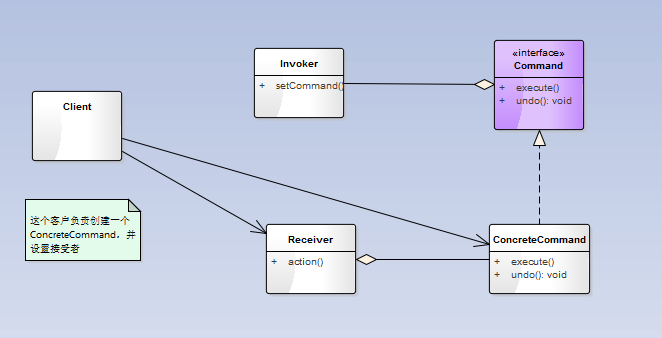

命令模式
命令模式将“请求”封装成对象，以便使用不同的请求、队列或者日志来参数化其他对象。命令模式也支持可撤销的操作。
类图如下：

示例：
Command
public interface Command {
public void execute();
public void undo();
}
Receiver
public class Light {
String location;
int level;
public Light(String location) {
this.location = location;
}
public void on() {
level = 100;
System.out.println("Light is on");
}
public void off() {
level = 0;
System.out.println("Light is off");
}
ConcreteCommand
public class LightOnCommand implements Command {
Light light;
public LightOnCommand(Light light) {
this.light = light;
}
public void execute() {
light.on();
}
public void undo() {
light.off();
}
}
public class LightOffCommand implements Command {
Light light;
public LightOffCommand(Light light) {
this.light = light;
}
public void execute() {
light.off();
}
public void undo() {
light.on();
}
}
Client
public class RemoteLoader {
public static void main(String[] args) {
RemoteControl remoteControl = new RemoteControl();
Light light = new Light("Living Room");
LightOnCommand lightOn = new LightOnCommand(light);
LightOffCommand lightOff = new LightOffCommand(light);
remoteControl.setCommand(0, lightOn, lightOff);
System.out.println(remoteControl);
System.out.println("--- Pushing Light On---");
remoteControl.onButtonWasPushed(0);
System.out.println("--- Pushing Light Off---");
remoteControl.offButtonWasPushed(0);
}
}
命令模式应用：
队列请求：命令可以将运算块打包（一个接受者和一组动作），然后将它传来传去，就像是一般对象一样。现在，即使在命令对象被创建许久之后，运算亦然可以被调用。事实上，它甚至可以再不同线程中被调用。我们可以利用这样的特性衍生一些应用，例如：日程安排（Scheduler）、线程池、工作队列等。
日志请求：某些应用需要我们将所有的动作记录在日志中，并能在系统死机之后，重新调用这些动作恢复到之前的状态。通过新增两个方法（store()、load())，命令模式就能够支持这一点。
命令也可以用来实现日志和事务系统。